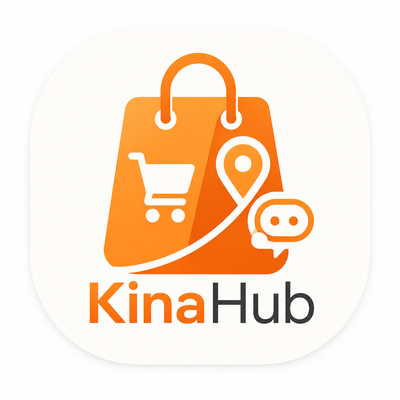
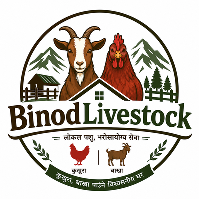
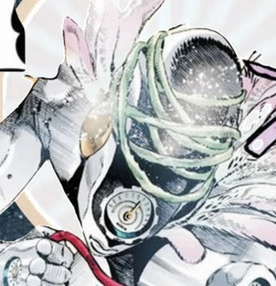
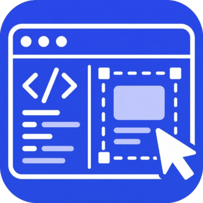

neo@arch:~$ whoami Bikram Gole neo@arch:~$ skills Linux | Python | C++ | Open Source | AI neo@arch:~$ projects > Ytdaily > Hyprland Cava Underlay > KinaHub
Mission Console
Pulse controls and live site state.
Console ready.
Signals launched: 0 · Milestones: 5 Warp, 10 Chill, 15 Grid, 20 Matrix.
PROJECT SPOTLIGHT
Ytdaily
Python-powered YouTube automation engine — monitors channels, downloads in up to 4K with parallel threads, strips sponsors via SponsorBlock, and runs silently as a systemd service.
VIEW REPOHyprland Cava Underlay
Hyprland visuals fused with an audio-reactive Cava underlay for a desktop that feels alive.
VIEW REPOKinaHub

Location-aware e-commerce platform with an AI shopping assistant (OpenRouter LLM), seller CRM dashboard, smart cart, and advanced filtering — built with React, Django, and PostgreSQL.
BinodLivestock

Full-stack livestock marketplace for buying and selling goats, chickens, and farm animals — built with Next.js, Express, Prisma, and PostgreSQL.
LIVE SITEJillab

Aesthetic personal website for my brother — video background, custom music player, snowfall effects, and a glowing cursor. Pure HTML/CSS/JS, zero frameworks.
LIVE SITERVX-UltraLock
Focus-first YouTube RVX build with UltraLock — block settings access for hours or permanently to kill distractions. Built on ReVanced Extended patches for Android.
VIEW REPOSnapcode

Firefox extension for instant visual element inspection — hover any element, click it, and get its HTML, computed CSS, a robust selector, and a screenshot bundled into a Markdown report copied straight to your clipboard.
GET ON FIREFOXAI Constellation
The people and ideas currently shaping how I think.
Feed
YouTube Radar
The channels that keep my model of tech, AI, Linux, and internet culture sharp.
Operators
People I Watch
I pay attention to builders who shape products, research, and systems at scale.
Build Thesis
What I Actually Want
Useful AI, fast tooling, open systems, and projects that feel good to use every day.
Current Orbit
Locked In On
- Agent-style workflows that save real time
- Terminal UX that feels clean and native
- Making personal branding feel technical, not corporate
Culture + Brain Fuel
Books
Dystopia, grit, ambition, and existential damage.
Movies
Mind-benders, big energy, and pure spectacle.
Games
My rotation is a mix of myth, creativity, and story-heavy chaos.
Anime
Psychological pressure, power systems, and strategic monsters.
Neo Terminal
A real mini shell for the site.
Neo 0ms [arch] Neo | OK | 0ms
╭─ ~/home/neo
Try: help, now, buildlog, projects, repo ytdaily, culture, quote, matrix
Persona Quiz Game
Test if people really know my vibe. Questions are based on my actual persona.
Hit start and prove your Neo-level awareness.
Score: 0/0
Live GitHub
Live repo feed from github.com/DevXtechnic.
Contribution Graph
Last year of GitHub activity.
Loading contributions...